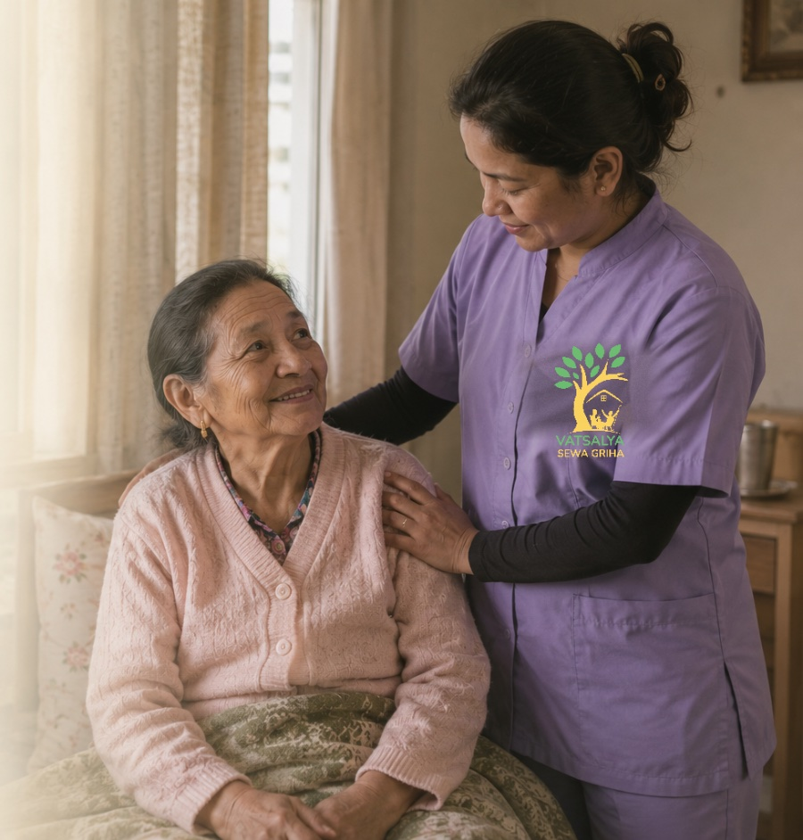
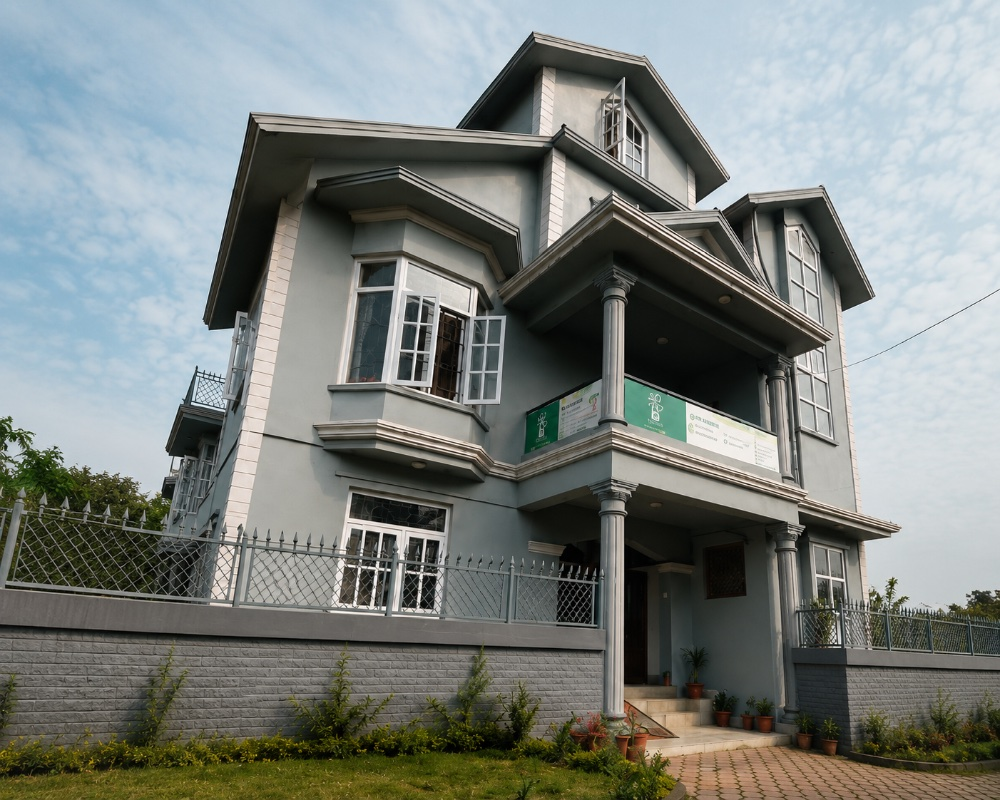
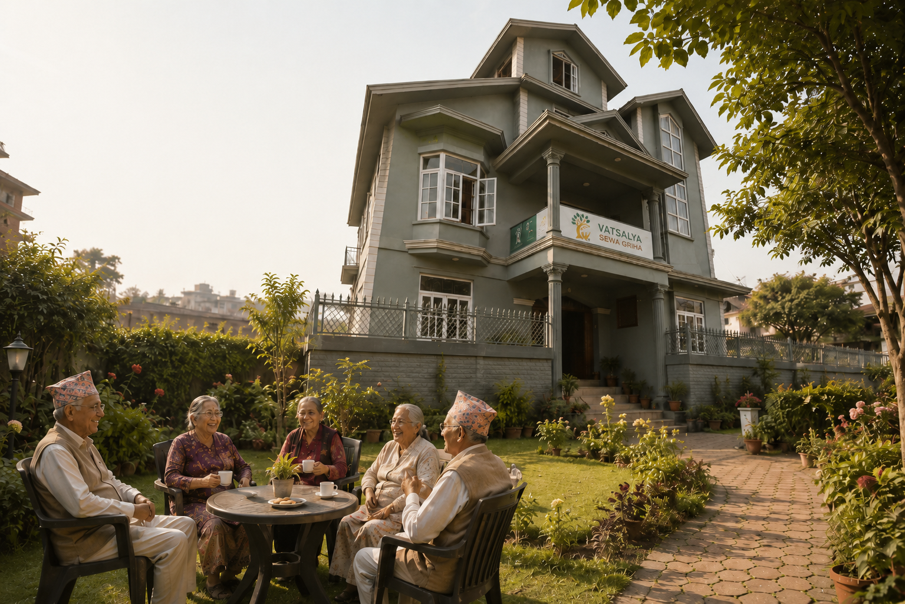

Where care meets joy
Vatsalya Sewa Griha
Daytime care for older people in Kumaripati, Lalitpur.
Where care meets joy
Daytime care for older people in Kumaripati, Lalitpur.
Vatsalya is a house in Kumaripati, Lalitpur, not a ward, not a waiting room. People come in the morning, have their tea and the paper, and spend the day around others instead of alone in front of the TV.
With care, the Vatsalya family

Morning
बिहानको चिया
The day starts together. Hot tea, the morning news, and friends to share it with before anything else.
Midday
दालभात, सँगै
Fresh, home-cooked Nepali food at a shared table. The kind of meal that tastes like someone made it just for you.
Afternoon
गीत र हाँसो
Gentle movement and a lot of laughter. Afternoons here are active and social, never long and empty.
Through the night
सुरक्षित रात
Health checks, gentle care and someone close by, all night. Safe in the dark hours too, so you can rest as well.


The staff are trained nurses and helpers. More than that, they're the kind of people who'll sit and listen, not just hand out pills and tick a box.
What time they wake, what they'll actually eat, which medicines, what they flat-out refuse to do. We figure that out and fit around it.
No visiting hours, no booking a slot. Phone us, or just turn up. We'll tell you how the day actually went.
If your parent had a rough day or there's a health worry, we call. We won't dress it up or wait for you to ask.
We don't have a long mission statement. These four come closest to how we actually try to work. Tap one to see what we mean.
We try to treat people the way we'd want our own parents treated. Mostly that means patience; old age is slow, and that's alright.
My father didn't want to come at first, said he didn't need babysitting. Now he's annoyed with us if we're running late to drop him off. He's made a couple of friends there.
I work full days and couldn't keep ringing to check on my dad. Now I'm not worried the whole time. That counts for a lot.
My mother eats better there than she does at home, honestly. And she comes back with some story every day.
Easiest thing is to just come by during the day, see the place, meet the staff, watch how it runs. Or call and ask us anything.